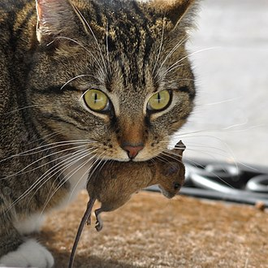

Etymology
The origin of the English word cat, Old English catt, is thought to be the Late Latin word cattus, which was first used at the beginning of the 6th century.[21] It was suggested that the word 'cattus' is derived from an Egyptian precursor of Coptic ϣⲁⲩ šau, "tomcat", or its feminine form suffixed with -t.[22] The Late Latin word may be derived from another Afro-Asiatic[23] or Nilo-Saharan language. The Nubian word kaddîska "wildcat" and Nobiin kadīs are possible sources or cognates.[24] The Nubian word may be a loan from Arabic قَطّ qaṭṭ ~ قِطّ qiṭṭ. It is "equally likely that the forms might derive from an ancient Germanic word, imported into Latin and thence to Greek and to Syriac and Arabic".[25] The word may be derived from Germanic and Northern European languages, and ultimately be borrowed from Uralic, cf. Northern Sami gáđfi, "female stoat", and Hungarian hölgy, "lady, female stoat"; from Proto-Uralic *käďwä, "female (of a furred animal)".[26]
The English puss, extended as pussy and pussycat, is attested from the 16th century and may have been introduced from Dutch poes or from Low German puuskatte, related to Swedish kattepus, or Norwegian pus, pusekatt. Similar forms exist in Lithuanian puižė and Irish puisín or puiscín. The etymology of this word is unknown, but it may have simply arisen from a sound used to attract a cat.[27][28]
A male cat is called a tom or tomcat[29] (or a gib,[30] if neutered). An unspayed female is called a queen,[31] (or a molly,[32] if spayed), especially in a cat-breeding context. A juvenile cat is referred to as a kitten. In Early Modern English, the word kitten was interchangeable with the now-obsolete word catling.[33] A group of cats can be referred to as a clowder or a glaring.[34]
Characteristics
Size
The domestic cat has a smaller skull and shorter bones than the European wildcat.[60] It averages about 46 cm (18 in) in head-to-body length and 23–25 cm (9–10 in) in height, with about 30 cm (12 in) long tails. Males are larger than females.[61] Adult domestic cats typically weigh between 4 and 5 kg (9 and 11 lb).[44]
Skeleton
Cats have seven cervical vertebrae (as do most mammals); 13 thoracic vertebrae (humans have 12); seven lumbar vertebrae (humans have five); three sacral vertebrae (as do most mammals, but humans have five); and a variable number of caudal vertebrae in the tail (humans have only three to five vestigial caudal vertebrae, fused into an internal coccyx).[62]: 11 The extra lumbar and thoracic vertebrae account for the cat's spinal mobility and flexibility. Attached to the spine are 13 ribs, the shoulder, and the pelvis.[62]: 16 Unlike human arms, cat forelimbs are attached to the shoulder by free-floating clavicle bones which allow them to pass their body through any space into which they can fit their head.[63]
Skull
The cat skull is unusual among mammals in having very large eye sockets and a powerful specialized jaw.[64]: 35 Within the jaw, cats have teeth adapted for killing prey and tearing meat. When it overpowers its prey, a cat delivers a lethal neck bite with its two long canine teeth, inserting them between two of the prey's vertebrae and severing its spinal cord, causing irreversible paralysis and death.[65] Compared to other felines, domestic cats have narrowly spaced canine teeth relative to the size of their jaw, which is an adaptation to their preferred prey of small rodents, which have small vertebrae.[65] The premolar and first molar together compose the carnassial pair on each side of the mouth, which efficiently shears meat into small pieces, like a pair of scissors. These are vital in feeding, since cats' small molars cannot chew food effectively, and cats are largely incapable of mastication.[64]: 37 Although cats tend to have better teeth than most humans, with decay generally less likely because of a thicker protective layer of enamel, a less damaging saliva, less retention of food particles between teeth, and a diet mostly devoid of sugar, they are nonetheless subject to occasional tooth loss and infection.
Claws
Cats have protractible and retractable claws.[67] In their normal, relaxed position, the claws are sheathed with the skin and fur around the paw's toe pads. This keeps the claws sharp by preventing wear from contact with the ground and allows for the silent stalking of prey. The claws on the forefeet are typically sharper than those on the hindfeet.[68] Cats can voluntarily extend their claws on one or more paws. They may extend their claws in hunting or self-defense, climbing, kneading, or for extra traction on soft surfaces. Cats shed the outside layer of their claw sheaths when scratching rough surfaces.[69]
Most cats have five claws on their front paws and four on their rear paws. The dewclaw is proximal to the other claws. More proximally is a protrusion which appears to be a sixth "finger". This special feature of the front paws on the inside of the wrists has no function in normal walking but is thought to be an antiskidding device used while jumping. Some cat breeds are prone to having extra digits ("polydactyly").[70] Polydactylous cats occur along North America's northeast coast and in Great Britain.[71]
Ambulation
The cat is digitigrade. It walks on the toes, with the bones of the feet making up the lower part of the visible leg.[72] Unlike most mammals, it uses a "pacing" gait and moves both legs on one side of the body before the legs on the other side. It registers directly by placing each hind paw close to the track of the corresponding fore paw, minimizing noise and visible tracks. This also provides sure footing for hind paws when navigating rough terrain. As it speeds up from walking to trotting, its gait changes to a "diagonal" gait: The diagonally opposite hind and fore legs move simultaneously.[73]
Balance
Most breeds of cat are noted fond of sitting in high places, or perching. A higher place may serve as a concealed site from which to hunt; domestic cats strike prey by pouncing from a perch such as a tree branch. Another possible explanation is that height gives the cat a better observation point, allowing it to survey its territory. A cat falling from heights of up to 3 meters (9.8 ft) can right itself and land on its paws.[74]
During a fall from a high place, a cat reflexively twists its body and rights itself to land on its feet using its acute sense of balance and flexibility. This reflex is known as the cat righting reflex.[75] A cat always rights itself in the same way during a fall, if it has enough time to do so, which is the case in falls of 90 cm (2 ft 11 in) or more.[76] How cats are able to right themselves when falling has been investigated as the "falling cat problem".[77]
Senses

Vision
Cats have excellent night vision and can see at only one-sixth the light level required for human vision.[64]: 43 This is partly the result of cat eyes having a tapetum lucidum, which reflects any light that passes through the retina back into the eye, thereby increasing the eye's sensitivity to dim light.[78] Large pupils are an adaptation to dim light. The domestic cat has slit pupils, which allow it to focus bright light without chromatic aberration.[79] At low light, a cat's pupils expand to cover most of the exposed surface of its eyes.[80] The domestic cat has rather poor color vision and only two types of cone cells, optimized for sensitivity to blue and yellowish green; its ability to distinguish between red and green is limited.[81] A response to middle wavelengths from a system other than the rod cells might be due to a third type of cone. This appears to be an adaptation to low light levels rather than representing true trichromatic vision.[82]
Hearing
The domestic cat's hearing is most acute in the range of 500 Hz to 32 kHz.[83] It can detect an extremely broad range of frequencies ranging from 55 Hz to 79 kHz. It can hear a range of 10.5 octaves, while humans and dogs can hear ranges of about 9 octaves.[84][85] Its hearing sensitivity is enhanced by its large movable outer ears, the pinnae, which amplify sounds and help detect the location of a noise. It can detect ultrasound, which enables it to detect ultrasonic calls made by rodent prey.[86][87] Recent research has shown that cats have socio-spatial cognitive abilities to create mental maps of owners' locations based on hearing owners' voices.[88]
Smell
Cats have an acute sense of smell, due in part to their well-developed olfactory bulb and a large surface of olfactory mucosa, about 5.8 square centimetres (29⁄32 square inch) in area, which is about twice that of humans.[89] Cats and many other animals have a Jacobson's organ in their mouths that is used in the behavioral process of flehmening. It allows them to sense certain aromas in a way that humans cannot. Cats are sensitive to pheromones such as 3-mercapto-3-methylbutan-1-ol,[90] which they use to communicate through urine spraying and marking with scent glands.[91] Many cats also respond strongly to plants that contain nepetalactone, especially catnip, as they can detect that substance at less than one part per billion.[92] About 70–80% of cats are affected by nepetalactone.[93] This response is also produced by other plants, such as silver vine (Actinidia polygama) and the herb valerian; it may be caused by the smell of these plants mimicking a pheromone and stimulating cats' social or sexual behaviors.[94]
Taste
Cats have relatively few taste buds compared to humans (470 or so versus more than 9,000 on the human tongue).[95] Domestic and wild cats share a taste receptor gene mutation that keeps their sweet taste buds from binding to sugary molecules, leaving them with no ability to taste sweetness.[citation needed] Their taste buds instead respond to acids, amino acids like protein, and bitter tastes.[96] Cats also have a distinct temperature preference for their food, preferring food with a temperature around 38 °C (100 °F) which is similar to that of a fresh kill and routinely rejecting food presented cold or refrigerated (which would signal to the cat that the "prey" item is long dead and therefore possibly toxic or decomposing).[95]
Whiskers
To aid with navigation and sensation, cats have dozens of movable whiskers (vibrissae) over their body, especially their faces. These provide information on the width of gaps and on the location of objects in the dark, both by touching objects directly and by sensing air currents; they also trigger protective blink reflexes to protect the eyes from damage.
Behavior
Outdoor cats are active both day and night, although they tend to be slightly more active at night.[97] Domestic cats spend the majority of their time in the vicinity of their homes but can range many hundreds of meters from this central point. They establish territories that vary considerably in size, in one study ranging from 7 to 28 hectares (17–69 acres).[98] The timing of cats' activity is quite flexible and varied, which means house cats may be more active in the morning and evening, as a response to greater human activity at these times.[99]
Cats conserve energy by sleeping more than most animals, especially as they grow older. The daily duration of sleep varies, usually between 12 and 16 hours, with 13 and 14 being the average. Some cats can sleep as much as 20 hours. The term "cat nap" for a short rest refers to the cat's tendency to fall asleep (lightly) for a brief period. While asleep, cats experience short periods of rapid eye movement sleep often accompanied by muscle twitches, which suggests they are dreaming.[100]
Sociability
The social behavior of the domestic cat ranges from widely dispersed individuals to feral cat colonies that gather around a food source, based on groups of co-operating females.[101][102] Within such groups, one cat is usually dominant over the others.[103] Each cat in a colony holds a distinct territory, with sexually active males having the largest territories, which are about 10 times larger than those of female cats and may overlap with several females' territories. These territories are marked by urine spraying, by rubbing objects at head height with secretions from facial glands, and by defecation.[91] Between these territories are neutral areas where cats watch and greet one another without territorial conflicts. Outside these neutral areas, territory holders usually chase away stranger cats, at first by staring, hissing, and growling and, if that does not work, by short but noisy and violent attacks. Despite this colonial organization, cats do not have a social survival strategy or a pack mentality, and always hunt alone.[104]
Life in proximity to humans and other domestic animals has led to a symbiotic social adaptation in cats, and cats may express great affection toward humans or other animals. Ethologically, a cat's human keeper functions as if a mother surrogate.[105] Adult cats live their lives in a kind of extended kittenhood, a form of behavioral neoteny. Their high-pitched sounds may mimic the cries of a hungry human infant, making them particularly difficult for humans to ignore.[106] Some pet cats are poorly socialized. In particular, older cats show aggressiveness toward newly arrived kittens, which include biting and scratching; this type of behavior is known as feline asocial aggression.[107]
Redirected aggression is a common form of aggression which can occur in multiple cat households. In redirected aggression there is usually something that agitates the cat: this could be a sight, sound, or another source of stimuli which causes a heightened level of anxiety or arousal. If the cat cannot attack the stimuli, it may direct anger elsewhere by attacking or directing aggression to the nearest cat, dog, human or other being.
Communication
Domestic cats use many vocalizations for communication, including purring, trilling, hissing, growling/snarling, grunting, and several different forms of meowing.[7] Their body language, including position of ears and tail, relaxation of the whole body, and kneading of the paws, are all indicators of mood. The tail and ears are particularly important social signal mechanisms in cats. A raised tail indicates a friendly greeting, and flattened ears indicates hostility. Tail-raising also indicates the cat's position in the group's social hierarchy, with dominant individuals raising their tails less often than subordinate ones.[111] Feral cats are generally silent.[112]: 208 Nose-to-nose touching is also a common greeting and may be followed by social grooming, which is solicited by one of the cats raising and tilting its head.
Purring may have developed as an evolutionary advantage as a signaling mechanism of reassurance between mother cats and nursing kittens, who are thought to use it as a care-soliciting signal.[113] Post-nursing cats also often purr as a sign of contentment: when being petted, becoming relaxed,[114][115] or eating. Even though purring as popularly interpreted as indicative of pleasure, it has been recorded in a wide variety of circumstances, most of which involve physical contact between the cat and another, presumably trusted individual.[113] Some cats have been observed to purr continuously when chronically ill or in apparent pain.
The exact mechanism by which cats purr has long been elusive, but it has been proposed that purring is generated via a series of sudden build-ups and releases of pressure as the glottis is opened and closed, which causes the vocal folds to separate forcefully. The laryngeal muscles in control of the glottis are thought to be driven by a neural oscillator which generates a cycle of contraction and release every 30-40 milliseconds (giving a frequency of 33 to 25 Hz).